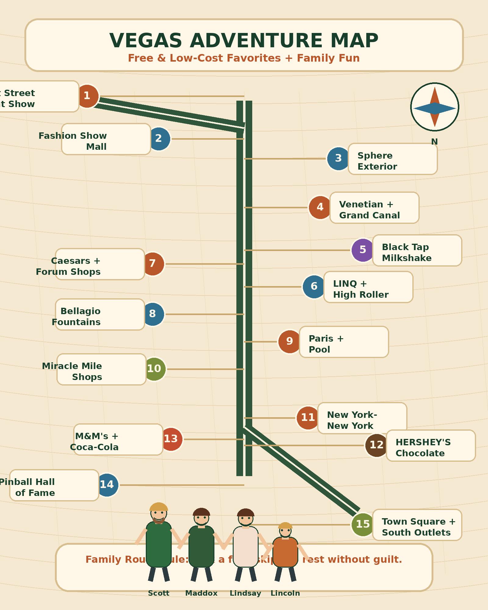

- 1Swim at the Paris pool
Built-in win because you are staying there.
Free for hotel guestsOutdoorBest morning/late afternoon - 2Bellagio Fountains
Free, close to Paris, and best at night.
FreeOutdoorBest at night - 3Paris Eiffel Tower photo
Quick “we made it to Vegas” moment.
FreeShort outdoorEasy - 4Walk The Venetian / Grand Canal
Free to wander, air-conditioned, and pairs with Black Tap.
Free to browseIndoorGood heat escape - 5Sphere exterior view
Go see the giant glowing ball. Photo stop only.
FreeShort outdoorBest after dark - 6Fremont Street light show
Early evening only. Watch one show, then leave.
FreeOutdoorEarly evening only - 7Pinball Hall of Fame
Low-cost and hands-on. Pay only for games you play.
Low costIndoorKid-friendly - 8Bellagio Conservatory
Free, indoors, and easy with the fountains.
FreeIndoorEasy - 9New York-New York coaster watching
Watching is free. Riding is optional.
Free to watchOutdoorOptional paid ride - 10New York-New York arcade walk-through
Cheap if you set a small game budget.
Low costIndoorGood reset - 11HERSHEY’S Chocolate World
Free to walk through. Treats optional.
Free to browseIndoorTreat stop - 12M&M’S Las Vegas
Free to browse and close to MGM / New York-New York.
Free to browseIndoorColorful - 13Coca-Cola Store
Free to browse. Drink tasting is optional.
Free to browseIndoorOptional tasting - 14LINQ Promenade
Free walking zone with snacks and people-watching.
FreeMostly outdoorBetter evening - 15Watch the High Roller from below
Seeing it is free. Riding it is optional.
Free to watchOutdoorOptional paid ride - 16Welcome to Las Vegas sign
Classic free photo, but expect heat and a line.
FreeOutdoorAvoid midday - 17Paris → Bellagio → Caesars walk
Hotel lobby/atrium walk with shade, AC, and photos.
FreeMostly indoorGood heat plan - 18Pool reset at New York-New York
Not flashy, but smart in July.
Hotel perkOutdoorHeat reset - 19Find the best Vegas sign/photo spot
Make it a family contest.
FreeFlexibleFun mission - 20Pick one cheap treat per hotel zone
Small dessert, soda, candy, or snack.
Low costFlexibleEasy win